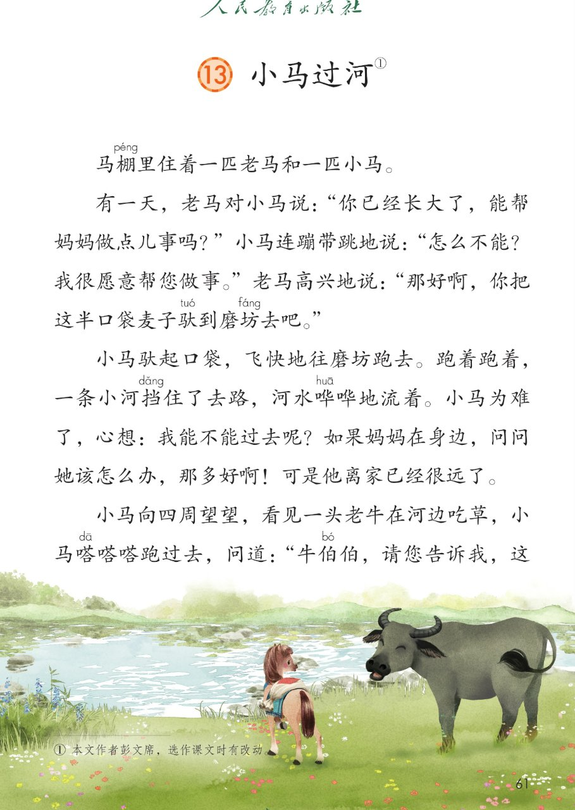
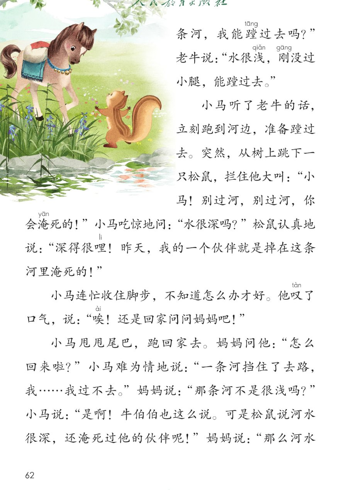
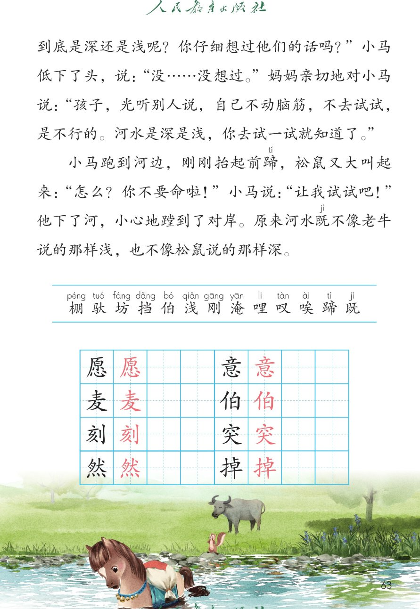
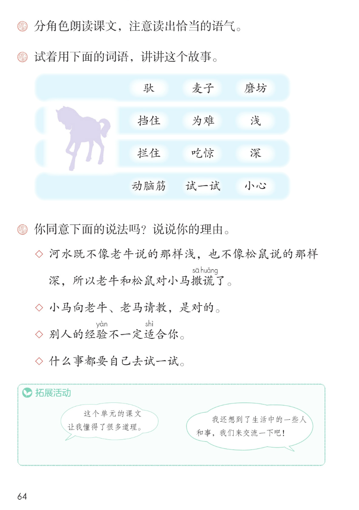

×
🔊 手机听不到声音怎么办？
① 先把手机
媒体音量调大 ，确认没开静音、没连蓝牙耳机；在微信里打开的，点右上角「⋯ → 用浏览器打开」。
② 还是没声音？到应用商店免费下载
Microsoft Edge 浏览器 （它自带朗读发声），用它打开本页面就能出声。
③ 换了 Edge 仍然没声音，说明这部手机的
硬件/系统不支持 网页朗读（多为老旧机型）；近几年买的新手机一般都能正常播放。
→ 打开声音自检
⭐ 第 13 课《小马过河》· 有声图文带读
统编版语文 · 第五单元·阅读 · 课本 第 61~64 页 · 本文作者彭文席
课文 8 段 · 共 29 句
会认字 13
会写字 8
听写词 10
近义词 4 组
深入理解 8 题
本课本领 分角色朗读·动脑筋试一试
🎧 五步学（可随时点任意一句、一个字、一个词单独听）： ① 听读课文 ——对话课文，一句一句读，读到哪一句哪一句发光；开「跟读」后读完一句留时间让你自己读。② 学字词 ——13 个会认字、8 个会写字（含书写提示），点一个读一个。③ 词语·听写·造句 ——先读读记记量词，再听写 10 个词（读两遍→你写→报答案→听示范句），最后听 4 组近义词辨析。④ 深入理解 ——8 道题（认知 / 理解 / 运用 / 拓展），开放题答案不唯一，先想后看。⑤ 分节朗读·想象画面 ——按五步想象课文里的画面，再听八位朗读者分段读，分角色读出恰当的语气。
📚 第五单元·阅读（单元进度）： 第11课《寓言二则》 → 第12课《画杨桃》 → 第13课《小马过河》 →（语文园地五待发图）
点段前的 ①~⑧ 听整段；对话的语气见朗读要求③
🔁 跟读模式：关
👁 隐藏注音（自测用）
注音只标本课要认的字和课本标音字，读音来自课本第 63 页生字表
🎤 朗读要求（老师标准） 棚、驮、坊 读第二声，挡、浅 读第三声，淹 读第一声，蹄 读第二声，既 读第四声；不添字、不漏字 ：逗号停得短，句号停得长；分角色朗读，读出恰当的语气（课后题①） ：老马的话读得亲切；老牛的话读得慢、沉稳；松鼠的话读得急、大声；小马的话先犹豫，后来坚定；边读边想 ：同一条河，为什么老牛和松鼠说的不一样。
①
马棚péng 里住着一匹老马和一匹小马。
②
有一天，老马对小马说："你已经长大了，能帮妈妈做点儿事吗？"
小马连蹦带跳地说："怎么不能？我很愿意帮您做事。"
老马高兴地说："那好啊，你把这半口袋麦子驮tuó 到磨坊fáng 去吧。"
③
小马驮tuó 起口袋，飞快地往磨坊fáng 跑去。
跑着跑着，一条小河挡dǎng 住了去路，河水哗哗地流着。
小马为难了，心想：我能不能过去呢？
如果妈妈在身边，问问她该怎么办，那多好啊！
可是他离家已经很远了。
④
小马向四周望望，看见一头老牛在河边吃草，小马嗒嗒嗒跑过去，问道："牛伯伯，请您告诉我，这条河，我能蹚tāng 过去吗？"
老牛说："水很浅qiǎn ，刚gāng 没过小腿，能蹚tāng 过去。"
⑤
小马听了老牛的话，立刻跑到河边，准备蹚tāng 过去。
突然，从树上跳下一只松鼠，拦住他大叫："小马！别过河，别过河，你会淹yān 死的！"
小马吃惊地问："水很深吗？"
松鼠认真地说："深得很哩li ！昨天，我的一个伙伴就是掉在这条河里淹yān 死的！"
⑥
小马连忙收住脚步，不知道怎么办才好。
他叹tàn 了口气，说："唉āi ！还是回家问问妈妈吧！"
⑦
小马甩甩尾巴，跑回家去。
妈妈问他："怎么回来啦？"
小马难为情地说："一条河挡dǎng 住了去路，我……我过不去。"
妈妈说："那条河不是很浅qiǎn 吗？"
小马说："是啊！牛伯伯也这么说。可是松鼠说河水很深，还淹yān 死过他的伙伴呢！"
妈妈说："那么河水到底是深还是浅qiǎn 呢？你仔细想过他们的话吗？"
小马低下了头，说："没……没想过。"
妈妈亲切地对小马说："孩子，光听别人说，自己不动脑筋，不去试试，是不行的。河水是深是浅qiǎn ，你去试一试就知道了。"
⑧
小马跑到河边，刚gāng 刚gāng 抬起前蹄tí ，松鼠又大叫起来："怎么？你不要命啦！"
小马说："让我试试吧！"
他下了河，小心地蹚tāng 到了对岸。
原来河水既jì 不像老牛说的那样浅qiǎn ，也不像松鼠说的那样深。
🤔 想一想（点我可跳过）
点一张图，听读整页

第 61 页 · 小马过河课文前半

第 62 页 · 小马过河课文对话

第 63 页 · 小马过河结尾与生字表

第 64 页 · 课后题与拓展活动
📖 人教版《语文》二年级下册 · 课本第 61~64 页 · 图片仅供个人学习，版权归人民教育出版社所有
点一个字，听读音、词语和课文里的句子
结构、部首、笔画与书写提示为通用规范，供参考，以教材和老师的指导为准
愿
yuàn
愿意 · 心愿
14 画 · 半包围（心）
上面原字写紧凑，心字底托稳
意
yì
意思 · 意见
13 画 · 上下（心）
上中下三层写匀，心字底要稳
麦
mài
麦子 · 麦苗
7 画 · 上下（麦）
撇捺展开，盖住下面
伯
bó
伯伯 · 大伯
7 画 · 左右（亻）
单人旁写窄，白字上紧下松
刻
kè
立刻 · 时刻
8 画 · 左右（刂）
左边写宽，立刀旁写直
突
tū
突然 · 冲突
9 画 · 上下（穴）
穴字头盖住下面，捺展开
然
rán
突然 · 居然
12 画 · 上下（灬）
上部写匀，四点底排开托稳
掉
diào
掉下 · 掉队
11 画 · 左右（扌）
提手写窄，右边上展下稳
点气泡，听课后题原文
📖 课后题（课本第 64 页照录） ：驮 麦子 磨坊 ／ 挡住 为难 浅 ／ 拦住 吃惊 深 ／ 动脑筋 试一试 小心 撒sǎ 谎huǎng 了。验yàn 不一定适shì 合你。
匹 一匹老马 一匹小马 一匹马
头 一头老牛 一头牛
只 一只松鼠 一只小鸟
条 一条小河 一条路
🌱 拓展活动（课本第 64 页照录） ：这个单元的课文让我懂得了很多道理。／我还想到了生活中的一些人和事，我们来交流一下吧！
读两遍 → 你在纸上写 → 报答案 → 听示范句
准备听写 · 共 10 个词
○ ○ ○
点下面的「开始听写」，听到一个词就写一个词。
▶ 开始听写
🔁 再读一遍
👁 看答案
点词听读，点句子听示范句，再自己说一句
1 愿意 会写字 · 愿
示范句：我很愿意帮妈妈做事。
✏️ 我也能说：谁 + 愿意做什么
2 心意 会写字 · 意
示范句：这朵小花是我送给妈妈的心意。
✏️ 我也能说：什么 + 是谁的心意
3 麦子 会写字 · 麦
示范句：小马把这半口袋麦子驮到磨坊去。
✏️ 我也能说：谁 + 把麦子怎么样
4 伯伯 会写字 · 伯
示范句：牛伯伯在河边吃草。
✏️ 我也能说：谁 + 请伯伯做什么
5 立刻 会写字 · 刻
示范句：小马听了老牛的话，立刻跑到河边。
✏️ 我也能说：谁 + 立刻做什么
6 突然 会写字 · 突
示范句：突然，从树上跳下一只松鼠。
✏️ 我也能说：突然 + 发生了什么
7 居然 会写字 · 然
示范句：他平时不爱说话，今天居然主动发言了。
✏️ 我也能说：谁 + 居然怎样
8 掉下 会写字 · 掉
示范句：我的一个伙伴就是掉在这条河里。
✏️ 我也能说：什么 + 掉到哪里
9 磨坊 会认字 · 坊
示范句：小马驮起口袋，往磨坊跑去。
✏️ 我也能说：谁 + 去磨坊做什么
10 挡住 会认字 · 挡
示范句：一条小河挡住了去路。
✏️ 我也能说：什么 + 挡住了什么
相同点 / 不一样在哪 / 各造一句
立刻 — 马上
相同：都表示动作很快，紧接着就做 。
不一样：立刻 强调一听一看就行动，课文写小马立刻跑到河边；马上 更常用于日常说话。
立刻：小马立刻跑到河边。
连忙 — 急忙
相同：都表示动作快、赶紧去做 。
不一样：连忙 强调接在别人的话或事情后面赶紧做，课文写小马连忙收住脚步；急忙 强调心里着急。
连忙：小马连忙收住脚步。
吃惊 — 惊讶
相同：都表示觉得很意外 。
不一样：吃惊 更常用、更口语，课文写小马吃惊地问；惊讶 更书面一些。
吃惊：小马吃惊地问，水很深吗。
难为情 — 不好意思
相同：都表示心里害臊、不自在 。
不一样：难为情 多用在说话做事的时候，课文写小马难为情地说；不好意思 更口语，常挂在嘴边。
难为情：小马难为情地说。
象声词 哗哗 嗒嗒嗒
连A带B式 连蹦带跳
描写心情的词 为难 吃惊 难为情
一字组多词 坊：磨坊、油坊 蹄：前蹄、马蹄
标「答案不唯一」的题，说得有道理都对
认知 老牛和松鼠分别是怎么说河水的？看解析
🤔 想一想
解析：
水很浅，刚没过小腿
深得很哩，淹死过伙伴
两种说法完全不同
理解 同一条河，老牛和松鼠说的为什么不一样？看解析
🤔 想一想
解析：
个子高，觉得浅
个子小，觉得深
都按自己的感受说
理解 从哪里看出小马一开始没动脑筋？看解析
🤔 想一想
运用 用课后题②的词语，讲讲这个故事。看解析
🤔 想一想
解析：
驮麦子去磨坊
挡住、为难、吃惊
动脑筋试一试
🌈 答案不唯一
运用 课后题③的四种说法，你同意哪一种？说说理由。看解析
🤔 想一想
解析：
每种说法对不对
为什么同意
🌈 答案不唯一
拓展 学了《小马过河》，你懂得了什么道理？看解析
🤔 想一想
点一步，听这一步
💬 想象支架：先 想小马驮麦子上路 → 再 想小河挡路 → 接着 想老牛松鼠说法不同 → 然后 想回家问妈妈 → 最后 想小马试一试，说说你懂的道理。
点一张卡，听这一段的句子；分角色注意语气
🌈 第1段·朗读者
第1段：马棚里住着一匹老马和一匹小马。
💬 开头交代出场，读得平静
🌈 第2段·朗读者
第2段：有一天，老马对小马说：你已经长大了，能帮妈妈做点儿事吗？
💬 老马嘱咐读得亲切，小马连蹦带跳读得高兴
🌈 第3段·朗读者
第3段：小马驮起口袋，飞快地往磨坊跑去。
💬 小马遇河发愁，读得着急
🌈 第4段·朗读者
第4段：小马向四周望望，看见一头老牛在河边吃草，小马嗒嗒嗒跑过去，问道：牛伯伯，请您告诉我，这条河，我能蹚过去吗？
💬 问老牛有礼貌，老牛的话读得慢、沉稳
🌈 第5段·朗读者
第5段：小马听了老牛的话，立刻跑到河边，准备蹚过去。
💬 松鼠大叫拦住读得急，小马吃惊读得紧张
🌈 第6段·朗读者
第6段：小马连忙收住脚步，不知道怎么办才好。
💬 叹气没主意，读得犹豫、小声
🌈 第7段·朗读者
第7段：小马甩甩尾巴，跑回家去。
💬 难为情读得不好意思，妈妈的话亲切、慢
🌈 第8段·朗读者
第8段：小马跑到河边，刚刚抬起前蹄，松鼠又大叫起来：怎么？你不要命啦！
💬 下决心试一试读得坚定，结尾感悟读得深